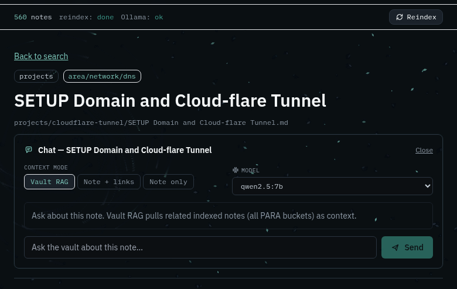
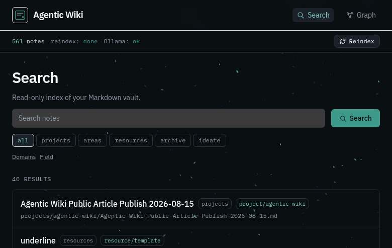

Build a Local Agentic Wiki Over Your Notes
A practical idea piece: turn a personal knowledge vault into a searchable, chat-capable wiki — without giving away a private lab recipe.

Figure 1 — Note reader with vault metadata and a “Chat with this note” entry point.
Why bother?
Most people already have notes: Obsidian, Markdown folders, course writeups, lab journals. Search inside the editor is fine until you want:
- A browser UI you can open on the LAN or through a tunnel
- Semantic search (“where did I write about DNS tunnels?”)
- Grounded chat that answers from your notes, with citations
That combination is what I call an agentic wiki: the vault stays the source of truth; a derived index powers search + RAG. You still write in your editor. The wiki is a read-only lens.
This article is intentionally idea-level. Exact hostnames, ports, passwords, folder layouts, and proprietary automation are omitted on purpose. Steal the architecture, invent your own wiring.
The shape of the system
[ Markdown vault ] --read-only--> [ Ingest + embed ]
|
v
[ Vector DB ]
|
+--------------------+--------------------+
| | |
Search UI Graph view Note chat
(filters) (wikilinks) (RAG modes)
Four pieces, nothing exotic:
| Piece | Job |
|---|---|
| Vault | Your Markdown notes (keep writing here) |
| Indexer | Watches files, parses frontmatter/wikilinks, embeds text |
| Store | Postgres + vector extension (or any pgvector-compatible store) |
| UI | Search, reader, graph, chat panel |
Local models (via Ollama or similar) handle embeddings and optional chat. Cloud models are optional; the idea works fully offline.
Design principles that keep you sane
- Vault is sacred — mount it read-only into the indexer/UI stack. Never let the chat agent write back unless you explicitly build a “save draft” flow later.
- Derived index, not a second brain — if the DB dies, regenerate from Markdown. Obsidian (or your editor) remains canonical.
- PARA + domains — filter by life buckets (projects / areas / resources / archive) and by topic folders (red team, network, cloud, …). Path-based mapping beats fragile tags alone.
- Same-origin API — if you expose the UI through Cloudflare Tunnel or LAN, the browser should call
/api/...on the same host. Hardcoding127.0.0.1breaks remote clients. - Screenshots belong in the vault — Obsidian embeds (
![[Pasted image….png]]) should resolve through a small media endpoint so the reader shows lab screenshots, not broken icons.

Figure 2 — Note-scoped chat (Vault RAG / Note+links / Note only) with a local model picker. I’ll also record a short video of vault browsing + chat on my side.
Chat that stays honest
A useful default chat mode is Vault RAG:
- Always include the open note
- Pull a few semantic neighbors
- Stream the answer with citation chips
Also offer Note only and Note + outbound links for days when you want maximum trust or tighter context.
Pick a solid local instruct model for chat and a dedicated embed model for vectors. Let users switch chat models in the UI; filter out OCR/vision/embed-only names from the picker.
UI tone (skip the AI clutter)
If you ship a dashboard:
- One clear brand mark, not stacked logos
- Collapse advanced filters (domains, field tags) behind toggles
- Status strip: note count, index job, model health — not a telemetry wall
- Prefer calm motion (subtle particle atmosphere, fade-ins) over purple glow kits
- Add basic framebusting headers if the UI will sit on a tunnel
Atmosphere can be interactive (mouse “friction” particles) as long as it stays pointer-events: none and respects prefers-reduced-motion.

Figure 3 — Search home: compact PARA filters, domains on demand, atmospheric background.
Getting started on your own stack
You do not need my exact compose file. Build toward this checklist:
- Pick a vault root of Markdown files
- Run Postgres with pgvector (localhost bind for the DB)
- Write a small Go/Python/Node indexer that:
- walks
*.md - skips trash/dotdirs
- upserts title, path, tags, body summary, embedding
- stores wikilink edges
- Expose a thin REST API: health, stats, notes, reindex, media, chat stream
- Ship a Next.js (or similar) reader with search + note page + chat panel
- Bind UI/API for your use case (
127.0.0.1for solo,0.0.0.0+ tunnel Access for remote) - Full reindex once, then rely on filesystem watch for deltas
Optional niceties: Control Hub TUI for start/stop/reindex; graph page; domain filters; async reindex with a progress strip.
What I deliberately left out
- Exact repository paths, agent profiles, and private vault taxonomy
- Credentials, tunnel hostnames, LAN IPs, model download scripts
- Step-by-step “clone this compose and paste these secrets”
- Internal automation that is specific to my homelab
The goal is transferable architecture, not a fingerprint of my lab.
Closing
An agentic wiki is not “ChatGPT over folders.” It is a discipline: notes remain human-owned Markdown; the machine gets a disposable index and a careful chat surface. Start small — one vault, one embed model, one search page — then add chat and screenshots when the index feels trustworthy.
If you build your own, keep the vault read-only until you are sure you want write-back. That single rule saves more pain than any fancy RAG trick.
Article visuals captured from a local demo UI. Video of live vault + chat walkthrough recorded separately by the author.